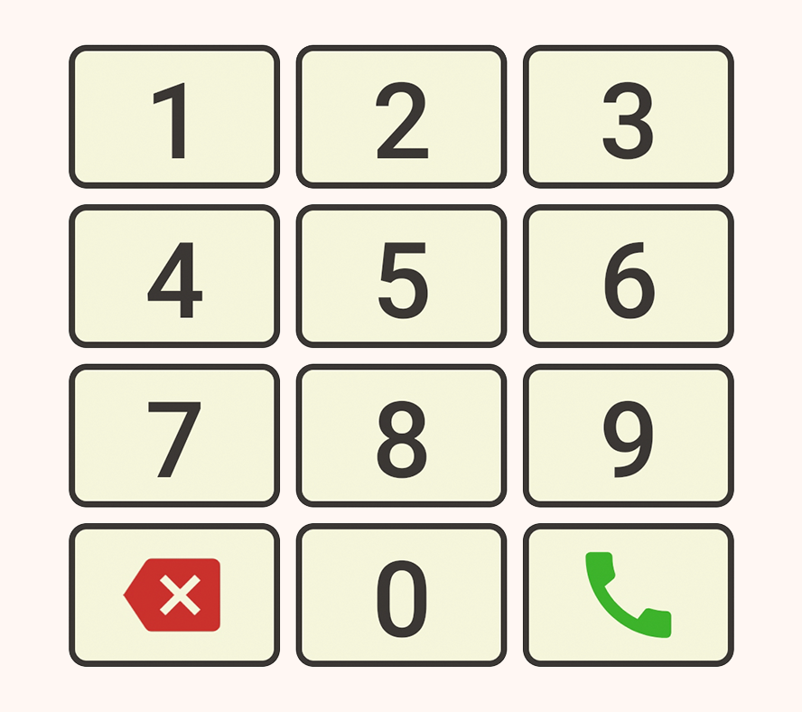
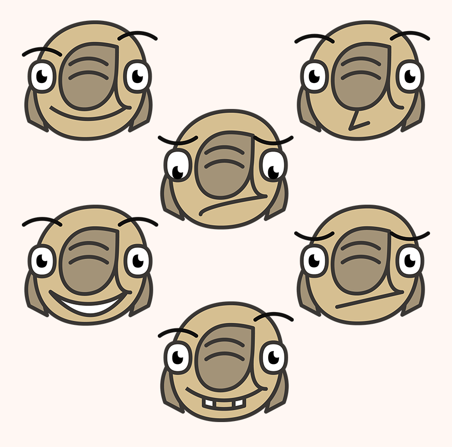
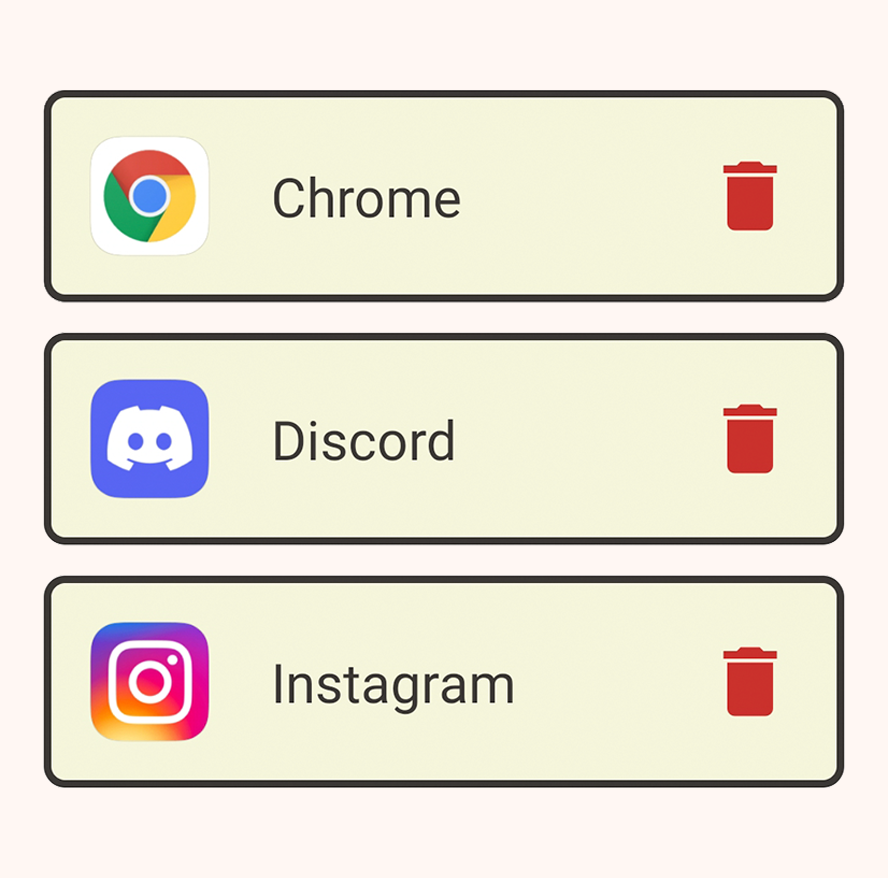
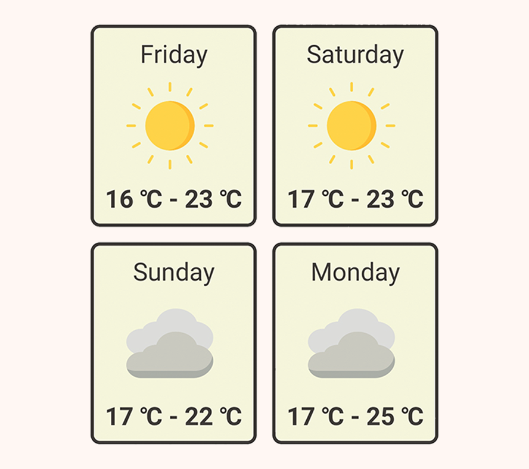
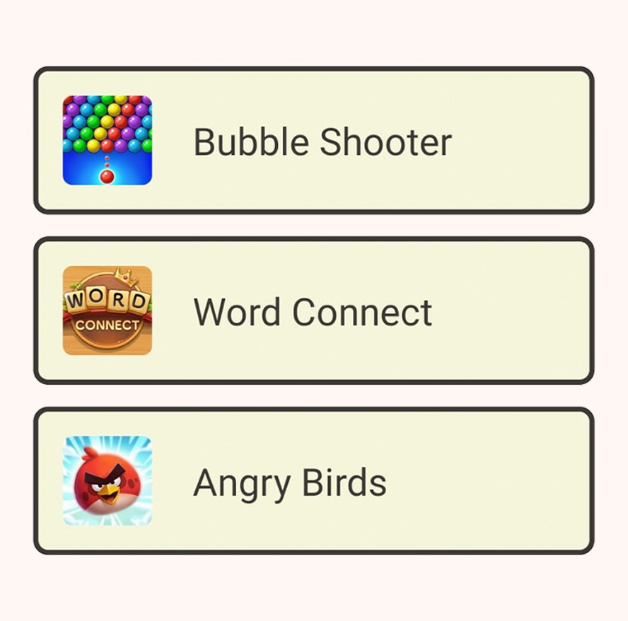
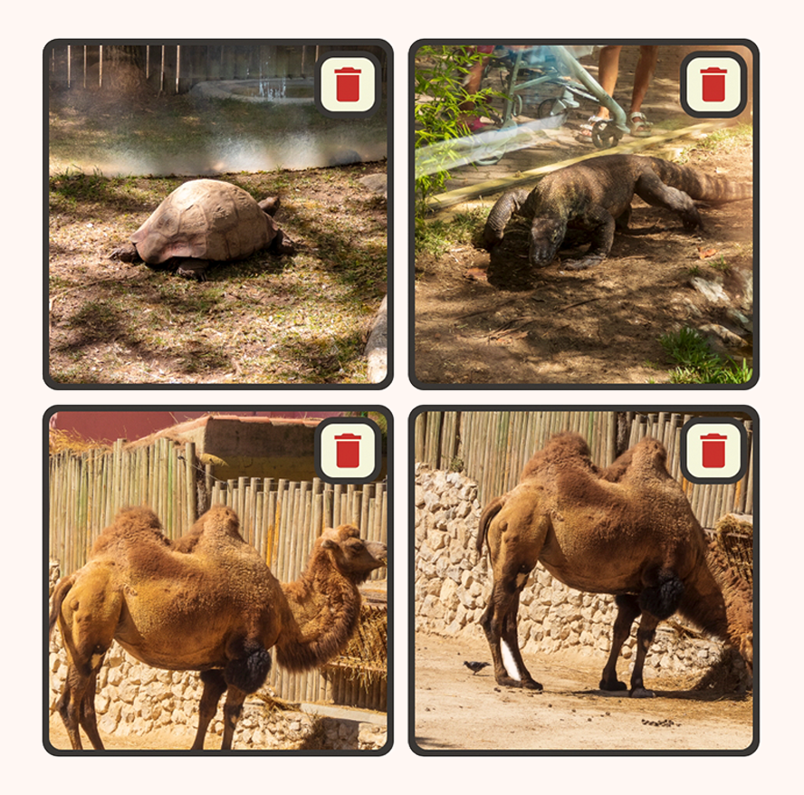
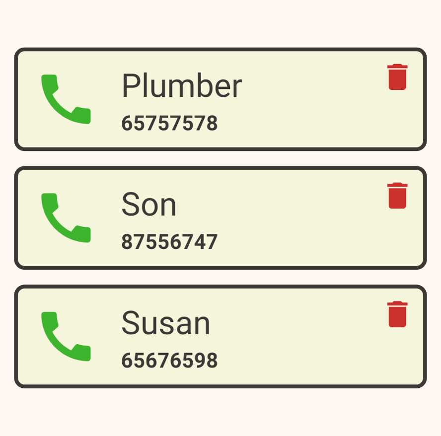

Elderoid is an Android Launcher app that organizes the most basic and essential Android features
in a very intuitive layout.
Also, you can always rely on Netie, the Elderoid companion!
He
will be helping and guiding you through this new and exciting adventure!
Elderoid offers many features that will help you navigate through your smartphone very easily.
That's what we are aiming for! Everyone should be able to use technology, right?
We understand users might have some kind of visual impairment, and it's important for us that everyone is able to use Elderoid. That said, we made the buttons and icons as large as possible!
Depending on the user's preferences, Elderoid may provide diferent features and visual components. That means the home page layout has to adapt to those preferences in order to keep a clean, natural look.
Throughout your navigation, Netie will always be there to help. He will give you tips, explain every feature and even ask you questions. If you are lost, all you have to do is click him. Also, he's cute, is he not?
You can choose which applications, installed in your device, should be made available. Then, you can launch and use them from inside Elderoid! This is useful if you want to play games, for example.
Among many exciting features Elderoid provides, weather forecast may be one of the most useful. It's always good to know if tomorrow is going to be a rainy day! Netie will tell you the temperature range and climate.
Elderoid even suggests new games that are easy to understand and will exercise the brain of the user! Challenging yourself with puzzle and memory games lowers your chances of developing cognitive impairments.
Access to the device camera is also provided, as long as it has one. With this feature also comes a simple gallery, so you can keep track of your beautiful photographs! You can even zoom in and out of your pictures.
If you need to store contact information like a phone book, Elderoid also provides a feature for that. You can easily save new contacts and call the ones you already saved. Perfect to keep in touch with family and friends!
A flashlight toggle button is also provided, in case your device has one. It can be found in the upper left corner of the home page. It's perfect for when the lights go out! You won't have to be afraid of the darkness anymore!